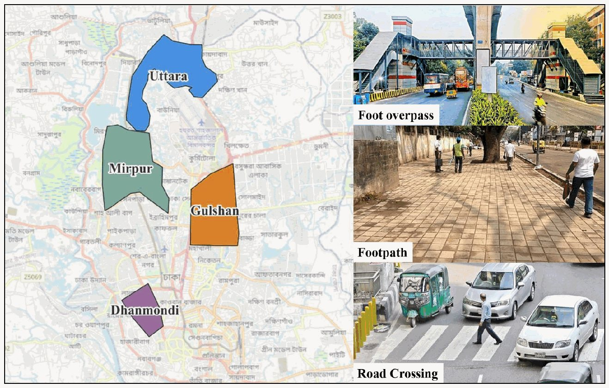
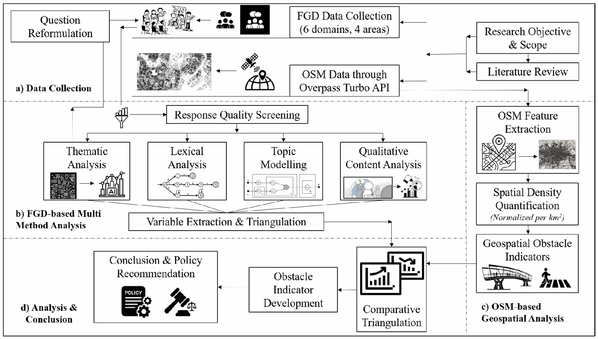
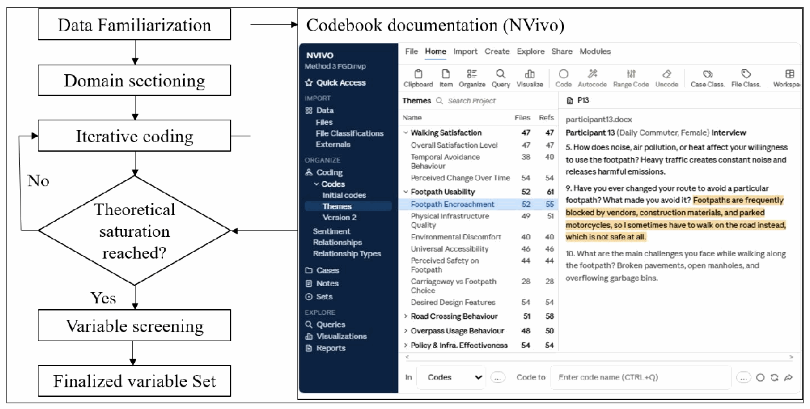
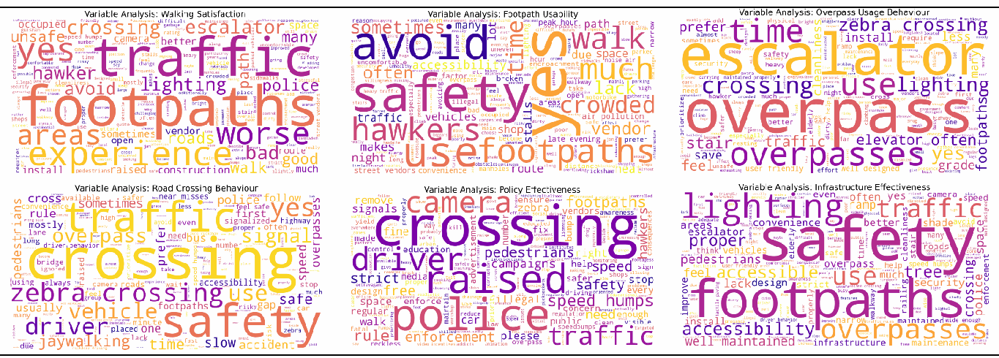
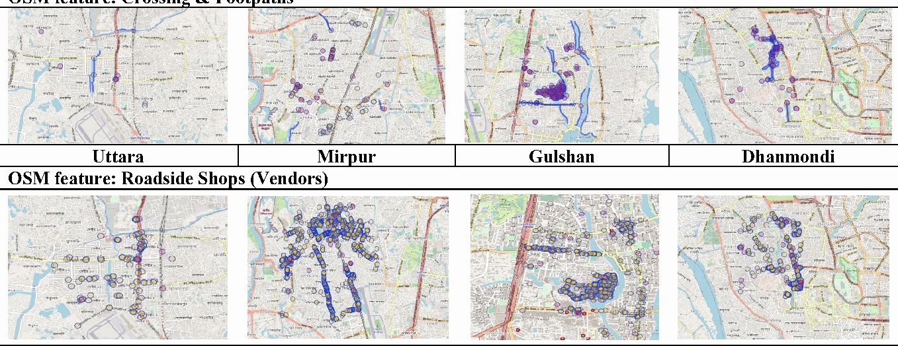
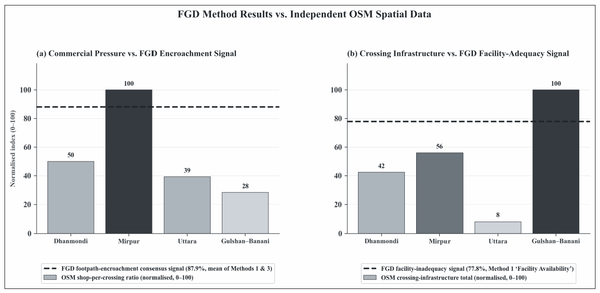

Research project
Pedestrian Obstacles and Walkability in a Developing Megacity
December 2025 – present
| Role | Lead researcher and corresponding author |
|---|---|
| Lab | Moinul Hossain, Ph.D. Lab, Islamic University of Technology |
| Data | 54 focus group discussion responses; OpenStreetMap (Overpass API) |
| Methods | Thematic analysis, word-frequency analysis, NVivo inductive coding, LDA topic modelling, geospatial triangulation |
| Outputs | TRB 2027 paper (accepted); Transportation Research Record (under review); walkability index paper in preparation |
Overview
In Dhaka, pedestrians deal every day with footpaths taken over by vendors and parked vehicles, road crossings without working signals or driver compliance, and foot overpasses that many people avoid. Earlier research has examined these problems separately, and perception-based surveys and infrastructure inventories are rarely compared directly. This project identifies the obstacles pedestrians report for each facility type and tests them against independently sourced geospatial data. It then uses that evidence to build a facility-specific walkability index.
Objectives
- Identify the obstacles pedestrians encounter when using footpaths, road crossings and foot overpasses, using focus group discussion evidence.
- Validate these obstacles by triangulation with OpenStreetMap data and examine where perception and infrastructure evidence agree or diverge.
- Develop chainage-based walkability indices for the three facility types (ongoing).
Study Area
Four areas were selected for contrasting land use and infrastructure: Mirpur and Gulshan as commercial hubs with mixed land use, Uttara as a planned peripheral residential area, and Dhanmondi as an established residential-commercial district.


Data
Focus group discussions
FGD responses were collected on site in two phases. An open-ended questionnaire covering six domains (general walking experience, footpath condition, road crossing behaviour, overpass use, governance and policy, and infrastructure suggestions) produced 26 preliminary responses. These were analysed with generative-AI-assisted thematic analysis and reviewed by the researchers and domain experts to refine the instrument. The final 39-question questionnaire brought the total to 54 responses.
OpenStreetMap
Infrastructure and commercial data for the same areas were extracted through the Overpass API. Because OSM tagging completeness varies by area, counts were normalised by study-area extent (features per km²).
| Feature class | Geometry | OSM tag |
|---|---|---|
| Pedestrian crossing | Point | highway=crossing |
| Footway segment | Line | highway=footway |
| Commercial establishment | Point / line | shop=* |
Table 1. OpenStreetMap queries.
Methodology


After response-quality screening, the corpus was analysed with four complementary methods so that no single technique determines the result:
- Generative-AI-assisted deductive thematic analysis. A keyword lexicon was generated for each of 39 predefined walkability variables, reviewed by the researcher, and applied by a deterministic Python script as binary encoding, giving a 54 × 39 respondent-variable matrix.
- Word-frequency analysis. Lowercasing, tokenisation and stop-word removal (without lemmatisation, to keep participants’ own wording), with frequency-scaled word clouds used as exploratory views.
- Inductive qualitative coding. Grounded-theory coding with the constant comparative method in NVivo 14, continued until theoretical saturation.
- LDA topic modelling. Latent Dirichlet Allocation in Gensim with each respondent as one document, K = 4 (three facility domains plus governance), α = 0.1 and η = 0.01, with coherence assessed using Cv.
Normalised OSM densities served as geospatial obstacle indicators. Where they agreed with the FGD findings, the obstacle was treated as corroborated. Where they diverged, the difference was examined as either data incompleteness or a real gap between infrastructure quantity and perceived adequacy.


Findings
- Footpaths. This domain showed the strongest agreement across methods. Vendor encroachment is the main cause of narrowed footpath space (footpath encroachment 96.3%, pedestrian safety 100% in inductive coding).
- Road crossings. Driver non-compliance is the defining concern (92.6% and 94.4% in the deductive and inductive methods). The evidence points to infrastructure gaps, not pedestrian choice, as the cause of informal crossing.
- Foot overpasses. Use is limited by physical effort and by security concerns after dark (88.9% in both cases).
- Governance. This domain showed the widest divergence between methods, likely because lexicon-based coding handles abstract governance concepts less well than full-context interpretation.
- Infrastructure priorities. Respondents asked for basic provision (universal accessibility, lighting, continuous footpaths) rather than technological solutions.
Across all four methods, footpath encroachment and driver non-compliance were the dominant obstacles, with consensus of 87% or higher. The OSM data supported this: in Mirpur, near-universal encroachment consensus (96.3%) matched the highest commercial density. The comparison also showed that more crossings and footways do not produce walkability where enforcement is weak.







Policy Implications
The results support area-specific pedestrian policy: vending-zone regulation in dense commercial corridors such as Mirpur, and new crossings in Uttara and Dhanmondi, where crossing infrastructure is most deficient.
Next Stage: Chainage-Based Walkability Index
The FGD evidence is being carried into three facility-specific indices for footpaths (FWI), road crossings (RCWI) and foot overpasses (FOWI). Component weights come from the FGD framework, domain weights from respondents’ investment priorities (0.574, 0.296 and 0.130), and OSM-based components are scored against stated benchmarks. In preliminary results, Dhanmondi scores highest (55.6), followed by Mirpur (47.4), Gulshan (39.0) and Uttara (38.6), and road-crossing walkability is poor in every area (13.1–22.0). The journal paper is in preparation.
My Contribution
Lead and corresponding author: analysis of the FGD data with the four methods, conversion of qualitative feedback into structured variables, OSM extraction and triangulation, and preparation of the TRB 2027 paper and the Transportation Research Record submission.